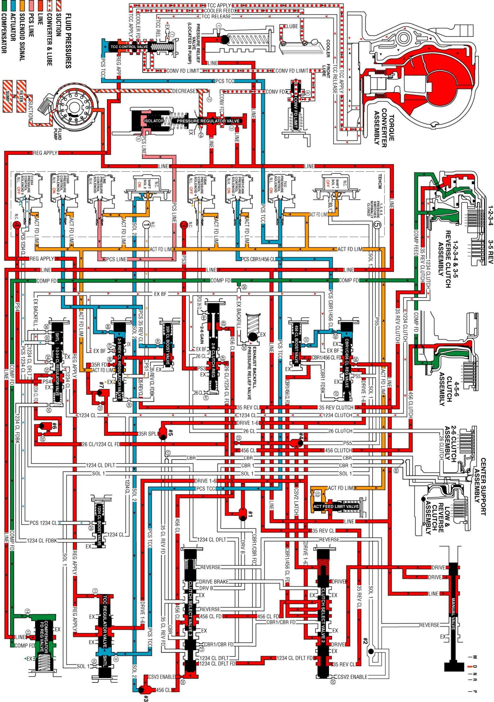

Drive Range, Fifth Gear
Drive Range, Fifth Gear
As the vehicle speed increases, the transmission control module (TCM) receives input signals from the automatic transmission input and output speed sensors, the throttle position sensor and other vehicle sensors to determine the precise moment to command ON the normally-high C35R pressure control solenoid 2. At the same time the normally-low C1234 pressure control solenoid 5 is commanded OFF.
3-5 Reverse Clutch Applies
C35R Pressure Control Solenoid 2
The C35R pressure control solenoid 2 is commanded ON, allowing actuator feed fluid to enter the PCS 35 reverse clutch fluid circuit. PCS 35 reverse clutch fluid is routed through orifice #48 and then to the 3-5 reverse clutch regulator valve. PCS 35 reverse clutch fluid is also routed through orifice #40 and then to the 3-5 reverse clutch boost valve.
3-5 Reverse Clutch Boost Valve
PCS 35 reverse clutch fluid pressure acts on a differential area moving the PCS 3-5 reverse clutch boost valve against the 3-5 reverse clutch boost valve spring. The 35 reverse clutch fluid passes through the valve and enters the 35 reverse clutch feedback circuit. As PCS 35 reverse clutch fluid pressure is increased to a given value, the 3-5 reverse clutch boost valve opens the 35 reverse clutch feedback circuit to exhaust. This results in the 3-5 reverse clutch regulator valve moving to the full feed position sending full 35 reverse clutch feed pressure (full line pressure) to the clutch.
3-5 Reverse Clutch Regulator Valve
PCS 35 reverse clutch fluid moves the 3-5 reverse clutch regulator valve against 3-5 reverse clutch regulator valve spring force and 35 reverse clutch feedback fluid. This allows 35 reverse feed to pass through the valve and enter the 35 reverse clutch circuit. The 35 reverse clutch fluid is then routed to the 3-5 reverse clutch, the 3-5 reverse boost valve and the clutch select valve 2. When the 3-5 reverse clutch regulator valve is in this position, PS1 fluid from the pressure switch 1 exhausts through the valve allowing the switch to close.
Clutch Select Valve 2
The 35 reverse clutch fluid passes through the clutch select valve 2 and enters the 1234 clutch default feed fluid circuit. The 1234 clutch default feed fluid is then routed to the clutch select valve 3.
3-5 Reverse Clutch
The 35 reverse clutch fluid enters the 1-2-3-4 and 3-5 reverse clutch housing to move the piston against spring force combined with force from the compensator to apply the 3-5 reverse clutch plates.
1-2-3-4 Clutch Releases
C1234 Pressure Control Solenoid 5
The C1234 pressure control solenoid 5 is commanded OFF, allowing PCS 1234 clutch fluid from the 1-2-3-4 clutch regulator valve and 1-2-3-4 clutch boost valve to exhaust.
1-2-3-4 Clutch Regulator Valve
The 1-2-3-4 clutch regulator valve spring force moves the valve to allow 1234 clutch feed fluid from the 1-2-3-4 clutch to pass through the valve and enter the exhaust backfill fluid circuit. The 1234 clutch fluid the enters the exhaust backfill fluid circuit and is routed through orifice #30 to the exhaust backfill pressure relief valve where excess pressure is exhausted. Also, 1234 clutch regulator valve spring force moves the valve to allow 1234 clutch feed fluid to pass through the valve and enter the PS4 fluid circuit. PS4 fluid is then routed to pressure switch 4 and opens the normally-closed switch.
1-2-3-4 Clutch Boost Valve
The 1-2-3-4 clutch boost valve spring force moves the valve to allow 1234 clutch feedback fluid from the 1-2-3-4 clutch regulator valve to enter the 1234 clutch circuit and exhaust.
1-2-3-4 Clutch
The 1-2-3-4 clutch spring force combined with force from the compensator moves the 1-2-3-4 clutch piston to release the clutch plates and force 1234 clutch fluid from the 1-2-3-4 and 3-5 reverse clutch housing. The 1234 clutch fluid is routed through the 1-2-3-4 clutch regulator valve where it enters the exhaust backfill fluid circuit.
Drive Range, Fifth Gear
Drive Range, Fifth Gear:
